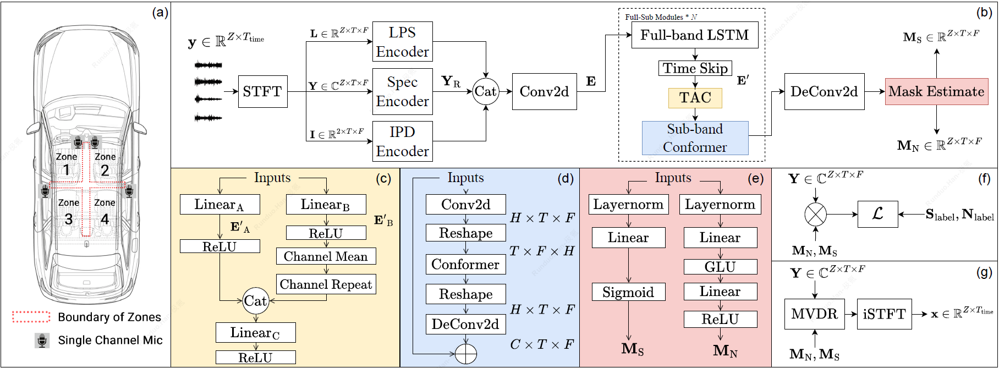

CabinSep: IR-Augmented Mask-Based MVDR for Real-Time In-car Speech Separation with Distributed Heterogeneous Arrays
0. Contents
1. Abstract
Front-end speech separation plays a vital role in human-car interaction systems. This paper presents CabinSep, a robust neural mask-based minimum variance distortionless response (MVDR) system. It overcomes the nonlinear distortions that are prevalent in current all-neural-network-driven solutions. We train the model to estimate speech and noise masks and apply MVDR solely during inference, thereby avoiding the numerical instability and ineffective noise reduction issues encountered in previous approaches. Our system incorporates multiple efficient modules that utilize channel information to enhance the separation capability. With a computational complexity of only 0.4G MACs, CabinSep achieves a 28.8% character error rate (CER) in real-world scenarios, outperforming state-of-the-art systems. Additionally, we evaluate various data augmentation methods using real-recorded impulse responses. By simulating more realistic training data, we improve speaker positioning accuracy and further reduce the CER.